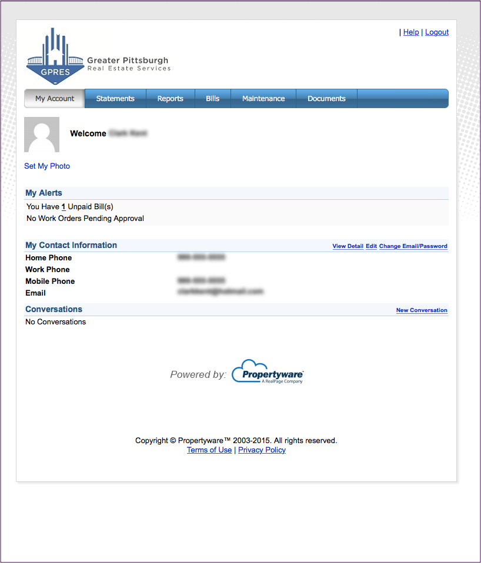
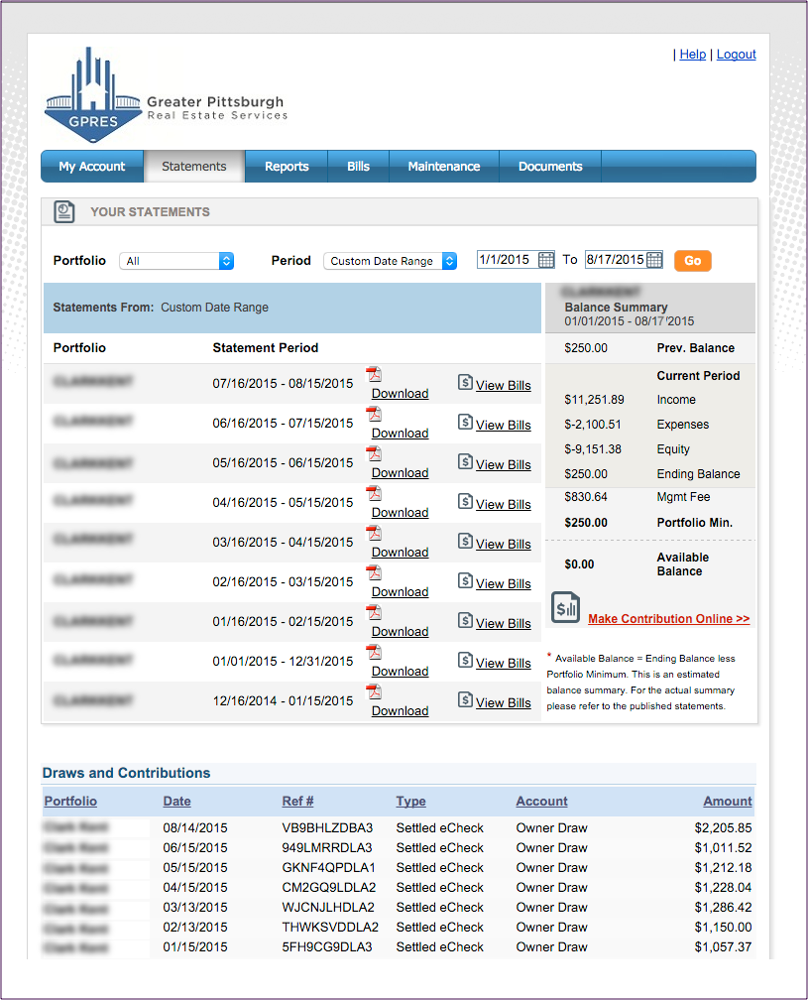

Property Management
Summary
Rental home owners who have hired property management companies are able to view important information about their rentals however the information is not very user friendly.
Explanation
Since I've been using a property management company for my rental home for the past 5 years I've come across many issues with their current system. I get frustrated trying to switch between viewing maintenance work orders and its associated bills, getting useful information from inspection reports, and needing to speak with the property management team for other information that should easily be accessible to me. Therefore, I decided to make an unsolicited redesign of their owner's portal and then develop the page.
Problem
My list of the current design's problems:
- The opening page after logging in doesn't show important or useful information.
- The user has to reselect a date range when switching between pages.
- Some navigational links are rarely used or poorly named.
- Some information is only accessible by downloading and opening a PDF document.
- Some tables show more information than necessary for a property owner.
- Bills and work orders are not linked across pages.
- Table data cannot be reordered.
- There is no visual representation of data.


Solution
I did some competitive analysis between PropertyWare and other property management software companies (Buildium, Total Management, AppFolio Property Manager, Rent Post, and 123Landlord). All of these software programs were designed for the landlord rather than the owner or tenant. I found that not all of the these even have an online portal for owners and those that do generally lack raw data and customization.
When an owner logs in to his portal he should be able to see items needing his attention plus a snapshot of other useful information. If a work order has been requested, the owner will see this work order request on the opening page so that he can approve or reject it without having to navigate through the system. He should also be able to download his monthly statement and view the recent income and expenses regarding his properties.
.png)
Results
After designing new pages and features I ran many usability tests. I found that on the opening page, users preferred to see the pending work order in a larger box than the other information. Users also didn't seem to understand the different between Maintenance Work Orders and Bills. I tested some different graphs. One tester told me that the transactions page was hard to read and suggested I change the color of item costs. I also realized that I needed to display more information regarding the current lease rather than looking through the lease document.
.png)
.png)
.png)
Conclusion
After being forced to use my property management company's current owner portal for several years I had a good understanding of the features that are useful, what was frustrating, and what would be good to see. I spent a lot of time designing the pages and had some doubts at how easily I would be able to develop the pages with data and graphs. It surprised at finding a JavaScript library that easily created graphs, although I had difficulty pushing my data into the graphs. I created this portal for an owner that only has one property and I would probably change a few of the pages and the scripts to accommodate multiple properties. Based on my time constraints for this student project, I only designed, researched, tested, and developed the experience for an owner. A total software redesign and overhaul would really improve the user experience.
.png)